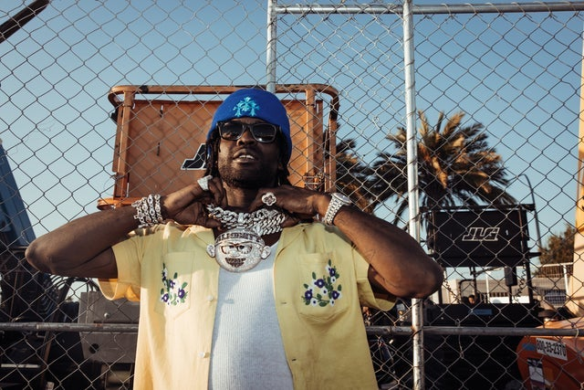
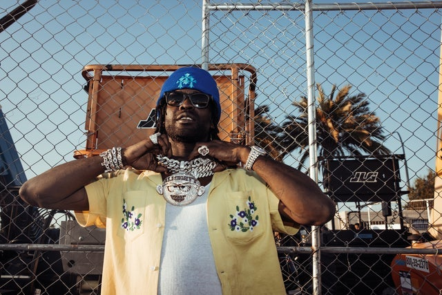

About Chief Keef
The Original Glory Boy - AKA Sosa, Turbo, So, Almighty, BigGucciSosa, Otto
 

Chief Keef was born August 15th, 1995 in Chicago, Illinois. He grew up a gangbanger in the notorious O'Block neighborhood of Chicago, cutting his teeth on music, guns, and drug-dealing. Vaulted into stardom from his underground tapes, Chief Keef became a renowned rapper at just 16 years old in 2011.
Sosa has many loves in life, from rapping to music production, drawing and product design, to smoking and playing video games all day every day. This party will contain everything he enjoys in one place.